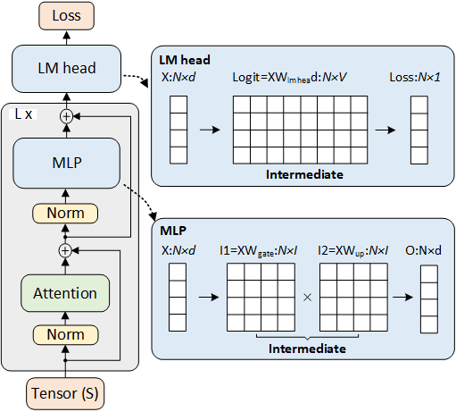

Understanding the Transformer Architecture
To grasp where these challenges come from, let's simplify the architecture of a transformer model like Llama. Essentially, Llama is built from a stack of identical units called transformer blocks. By focusing on a single transformer block, we can understand the computations involved throughout the entire model.
The diagram above illustrates the overall architecture of llama and a transformer block. A transformer block consists of three main components:.
- Self-Attention: This mechanism allows the model to weigh the importance of different tokens (words or subwords) in the input sequence when processing each token.
- Multilayer Perceptron (MLP): A feedforward neural network that processes the output from the self-attention layer to capture complex patterns.
- Language Modeling Head (LM-Head): A final linear layer that maps the processed information to a probability distribution over the vocabulary, helping predict the next token in a sequence.
For simplicity, we'll ignore some additional components like Layer Normalization, masking, dropout, and residual connections. Instead, we'll focus on the tensor shapes and sizes involved in the computations, which are crucial for understanding the model's memory usage and computational requirements.
Key Parameters of Llama Models
Different versions of Llama have varying sizes and capabilities. Here's a table summarizing some key parameters:
| Feature | LLAMA2-7B | LLAMA3-8B | LLAMA3.1-8B |
|---|---|---|---|
| Layers | 32 | 32 | 32 |
Hidden Size (d) |
4096 | 4096 | 4096 |
Sequence Length (s) |
4096 | 8192 | 131072 |
MLP Intermediate Size (I) |
11008 | 14336 | 14336 |
Vocabulary Size (V) |
32000 | 128256 | 128256 |
Observations:
- Increased MLP Size: LLAMA3 models have a larger MLP intermediate size (
I), increasing from 11,008 to 14,336. This allows the model to capture more complex patterns but increases computational demands. - Larger Vocabulary: The vocabulary size (
V) has grown from 32,000 to 128,256, accommodating more words and subwords but also increasing the size of certain tensors. - Longer Sequences: LLAMA3.1 supports much longer sequences (
s), up to 131,072 tokens. While this enables the model to process longer inputs, it significantly increases the computational load.
Tensor Shapes and Their Impact on Computation
Understanding the shapes of tensors (multi-dimensional arrays) in the model helps us identify where computational challenges arise.
Scalars and Input Shapes
- Batch Size (
b): Number of sequences processed in parallel (e.g.,b = 1). - Sequence Length (
s): Length of each input sequence (e.g.,s = 8192or131072). - Hidden Size (
d): Size of the hidden state vector in the model (e.g.,d = 4096). - MLP Intermediate Size (
I): Size of the intermediate vector in the MLP (e.g.,I = 14336). - Vocabulary Size (
V): Number of unique tokens the model can predict (e.g.,V = 128256).
Key Tensors in the Transformer Block
- Input Tensor (
X): Shape(b, s, d)- Represents the input embeddings for the sequence.
- Self-Attention Computations:
- Queries (
Q): Result ofXprojected byWQ, shape(b, s, d) - Keys (
K): Result ofXprojected byWK, shape(b, s, d) - Values (
V): Result ofXprojected byWV, shape(b, s, d)
- Queries (
- MLP Computations:
- Intermediate Tensors:
XWup: Shape(b, s, I)XWgate: Shape(b, s, I)
- These are combined and transformed back to shape
(b, s, d).
- Intermediate Tensors:
- LM-Head Output:
- Logits (
logit): Result ofXprojected byWLM-HEAD, shape(b, s, V)
- Logits (
Challenges with Large Tensors
- Memory Usage:
- The LM-Head output tensor has a shape of
(b, s, V). With largesandV, this tensor becomes enormous.- For
s = 131072andV = 128256, the tensor requires over 33 GB of memory just to store the logits.
- For
- The MLP intermediate tensors (
XWupandXWgate) have shapes of(b, s, I), also consuming significant memory.- For
s = 131072andI = 14336, the tensor requires over 7.5G GB of memory just to store the intermediate.
- For
- The LM-Head output tensor has a shape of
- Comparison:
- Other tensors like
X,Q,K, andVhave shapes(b, s, d). Withdbeing smaller thanVand sometimesI, these tensors are relatively smaller in size of 1GB. - In the early stages of transformer development, the self-attention mechanism was considered the
main memory bottleneck during training. Specifically, the
QK^Kresulting in a tensor of shape(b, s, s, head), wherehis the number of attention heads. or example, with a sequence length of 131072 tokens and 16 heads, the attention tensor would have dimensions(1, 131072 , 131072 , 16), which requires 550G GB. - FlashAttention optimize it the attention, make it small as
Qwith shapes(b, s, d)in size of 1GB. That open the door of optimizing the other large tensors
- Other tensors like
Mini-Sequence Processing to Optimize Memory Usage
To handle the computational challenges posed by large tensor sizes, especially with long sequences and large vocabularies, we can adopt the following strategy:
Partitioning Input Sequences
- Divide the Sequence: Split the input sequence into
Msmaller chunks or mini-sequences of lengths/M. - Process Mini-Sequences Iteratively:
- Instead of processing the entire sequence at once, we process each mini-sequence one after the other.
- Reduced Tensor Sizes:
- MLP Intermediate Tensors:
- Original size:
(b, s, I) - Reduced size:
(b, s/M, I)
- Original size:
- LM-Head Output Tensors:
- Original size:
(b, s, V) - Reduced size:
(b, s/M, V)
- Original size:
- MLP Intermediate Tensors:
- Memory Reduction:
- By choosing a suitable
M, we can reduce the memory required for these tensors by a factor ofM. - With a large enough
M, the intermediate memory usage becomes manageable.
- By choosing a suitable
Thankfully, some smart people have already discovered the approach similarity as mini-batch training, which is deployed as gradient accumulation on multiple library. We can try implementing this technique on sequence level and work out the necessary details.
Congratulations! We’ve essentially know the key idea of Mini-Sequence Transformers [NeurIPS’24] paper. Additionally, I recommend checking out this awesome repo of Mini-Sequence Transformers.

Example Implementation
We have developed methods and libraries to facilitate this approach. By installling the mini-sequence wrapper pip install -U https://github.com/wdlctc/mini-s, you can efficiently train large transformer models with long sequences.
from minis.mini_sequence import minisequence
model = minisequence(model)
Key Takeaway
- Efficient Long-Sequence Training: By partitioning sequences, models like LLAMA3-8B can be trained with sequence lengths up to 60k tokens on a single high-end GPU.
- Memory Optimization: Reduces the memory required for large intermediate tensors, addressing one of the main bottlenecks in training large models.
- Maintains Throughput: Despite processing sequences in parts, the overall training speed remains comparable to standard implementations.
- Easy Integration: The approach can be integrated into existing training frameworks with minimal code changes, making it accessible for practitioners.
- General Applicability: Supports various training methods and is not limited to specific model architectures or configurations.
Conclusion
Understanding the tensor shapes and sizes in transformer models is crucial for identifying computational challenges and optimizing training. By focusing on how the dimensions of these tensors impact memory usage, especially with large sequence lengths and vocabulary sizes, we can develop strategies to make training more efficient.
Partitioning input sequences and processing them as mini-sequences is an effective way to reduce memory usage without sacrificing performance. This approach enables the training of large transformer models on long sequences using available hardware, paving the way for advancements in natural language understanding and generation tasks.
Note: For those interested in implementing these techniques, tools like the Mini-Sequence Transformers library are available and can be integrated into your projects to facilitate efficient training on long sequences.